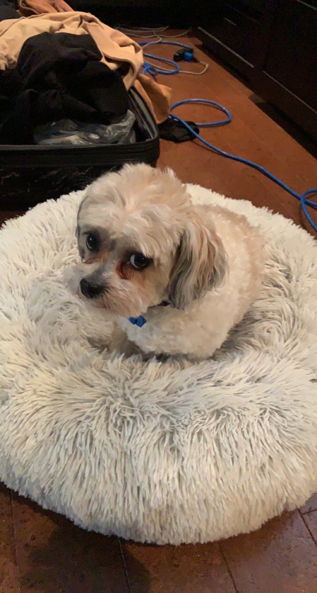
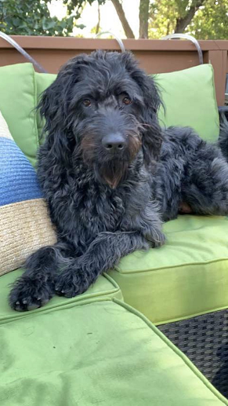
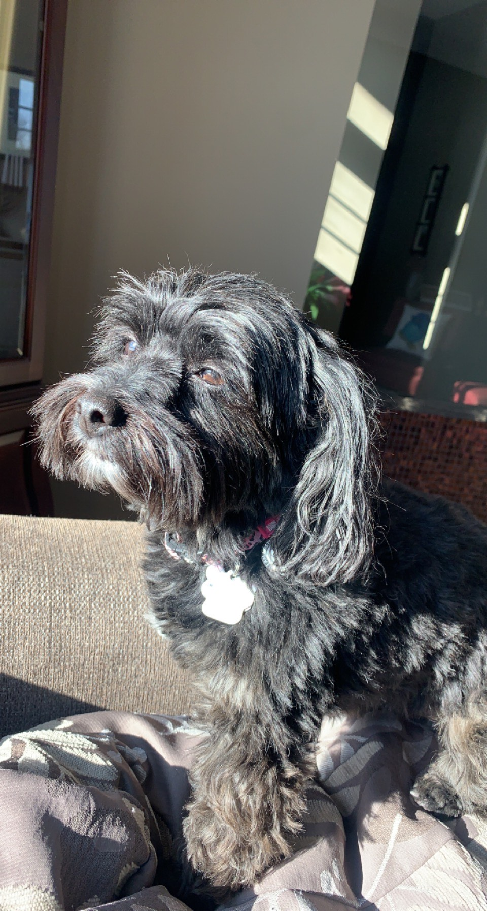

Newest member... Max!
Hi, my name is Max and I am a Shitzu/Poodle mix. I love taking very long walks and playing outside with my friends. I enjoy any sort of dog friendly treat that you have to offer and I really enjoy snuggles. I cannot wait for you to pick me so we can raise the woof together!
Stella
Hey there, my name is Stella and I am a Labradoodle. I may look like I am large in size, but I will definetly attempt to fit on your lap. I have been going through a bit of a ruff pooch, so new friends are always welcome!
Lucy
My name is Lucy and the world revolves around me, so no pup-arazzi please. I am a Yorkshire Terrior and Poodle mix. My favourite snacks are cheese and ham. I am very little in size but I have a very big and loving heart. I may be sassy at times but I really do enjoy company, so a day with me would change your life.